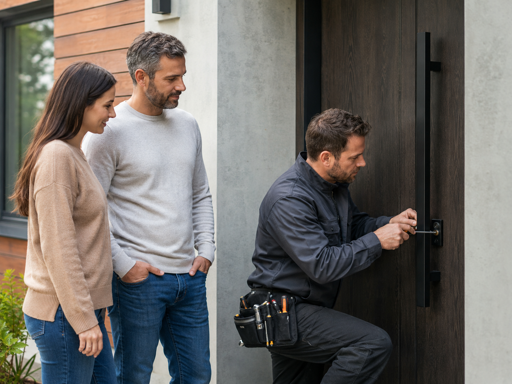

Situation identifiée
Porte claquée, verrouillée, clé cassée, cylindre dur ou serrure multipoints : la différence est faite avant intervention.
Urgence serrurerie : sécuriser sans aggraver la panne
Urgence serrurier à Saint-Germain-en-Laye 78100 pour une demande liée à la porte, au cylindre, au verrouillage ou à la sécurité de l’accès. Ici, le serrurier commence par comprendre la panne avant de proposer une ouverture, une réparation ou un remplacement.

Porte claquée, verrouillée, clé cassée, cylindre dur ou serrure multipoints : la différence est faite avant intervention.
Une ouverture fine est privilégiée quand elle est possible, surtout si la serrure peut être conservée.
Le prix est annoncé avant remplacement de cylindre, changement de serrure ou intervention lourde.
Après dépannage, la porte est contrôlée : poignée, pêne, gâche, cylindre et verrouillage réel.
Quand l’accès est impossible, la tentation est de forcer. Pourtant, une clé cassée, une serrure grippée ou une porte verrouillée demandent une lecture précise. La priorité est d’ouvrir ou de sécuriser sans détruire ce qui peut être conservé.
Situation fréquente à Saint-Germain-en-Laye : une clé qui casse dans le cylindre après plusieurs semaines de résistance, souvent au retour du RER ou en fin de journée. Ce détail change la méthode, car une clé visible, une serrure verrouillée ou une porte qui frotte ne se traitent pas de la même manière.
À Saint-Germain-en-Laye, les interventions concernent souvent résidences de standing, appartements proches RER, maisons familiales et portes renforcées sur accès principaux. Cette réalité locale compte, car l’accès, le bâti et le niveau de sécurité changent la méthode.
Selon le problème, l’intervention peut consister à ouvrir une porte, extraire un morceau de clé, remplacer un cylindre, condamner provisoirement un accès ou vérifier une serrure après tentative d’effraction. La solution dépend de l’état réel de la fermeture.
À Saint-Germain-en-Laye, on cherche d’abord à extraire, régler ou remplacer seulement la pièce utile : cylindre, barillet, gâche ou visserie de maintien. Le but est de rendre l’accès sans abîmer ce qui peut rester en place, puis de contrôler la fermeture plusieurs fois.
Le contrôle porte sur le jeu autour de la porte, la réaction de la clé, le retour du pêne, l’état de la gâche et le comportement de la poignée. Une panne visible peut parfois cacher un défaut d’alignement.
En urgence, le prix doit rester clair. Une ouverture simple n’a rien à voir avec une porte blindée verrouillée ou un mécanisme multipoints bloqué. Le tarif est annoncé avant toute action lourde.
Les portes récentes y sont souvent solides ; le bon diagnostic évite de percer trop vite un cylindre encore récupérable. Le devis gratuit sert à séparer ce qui relève d’un réglage, d’un cylindre à remplacer ou d’une serrure complète à reprendre.
Intervention selon disponibilité autour de Centre-ville, Château, Bel-Air, Pereire, Fourqueux. La localisation aide surtout à organiser le déplacement : hall sécurisé, badge, gardien, parking privé ou entrée côté jardin.
Le dépannage reste d’abord technique. Une page locale ne doit pas remplacer le vrai diagnostic : porte claquée, porte fermée à clé, serrure bloquée, cylindre fatigué ou porte blindée.
Les prix dépendent du verrouillage et du matériel installé. Le devis gratuit évite les mauvaises surprises.
À partir de 75€ si elle est non verrouillée et accessible normalement.
Devis selon cylindre, points de fermeture et niveau de sécurité.
Prix selon dimensions, modèle, protection et compatibilité.
Diagnostic du pêne, de la gâche et du mécanisme avant devis.
Méthode et tarif adaptés au système multipoints.
Après perte de clés, vol, effraction ou fermeture inutilisable.
Gardez l’accès libre, préparez les informations du logement et évitez d’insister sur la clé si elle force ou se tord.
Oui. Après effraction ou serrure inutilisable, une sécurisation provisoire peut permettre de fermer en attendant une réparation durable.
Oui, le prix est annoncé avant intervention dès que la situation est identifiée.
Pages liées pour naviguer entre les villes premium des Yvelines, les services proches et les pages serrurier Paris.
Pour une demande à Saint-Germain-en-Laye 78100, indiquez le type de porte, le blocage exact et l’accès. Devis gratuit, prix annoncé avant intervention.